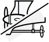
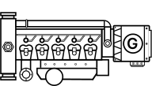
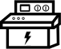
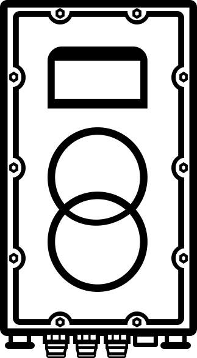
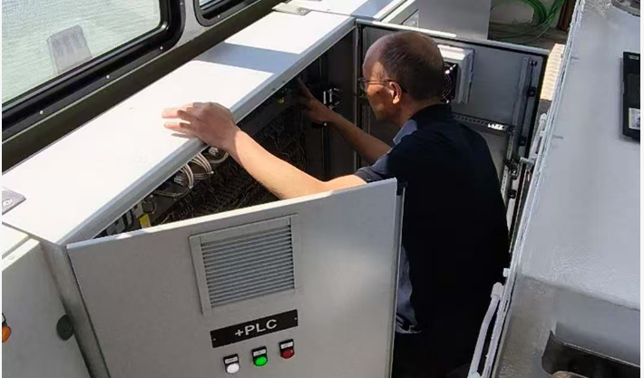
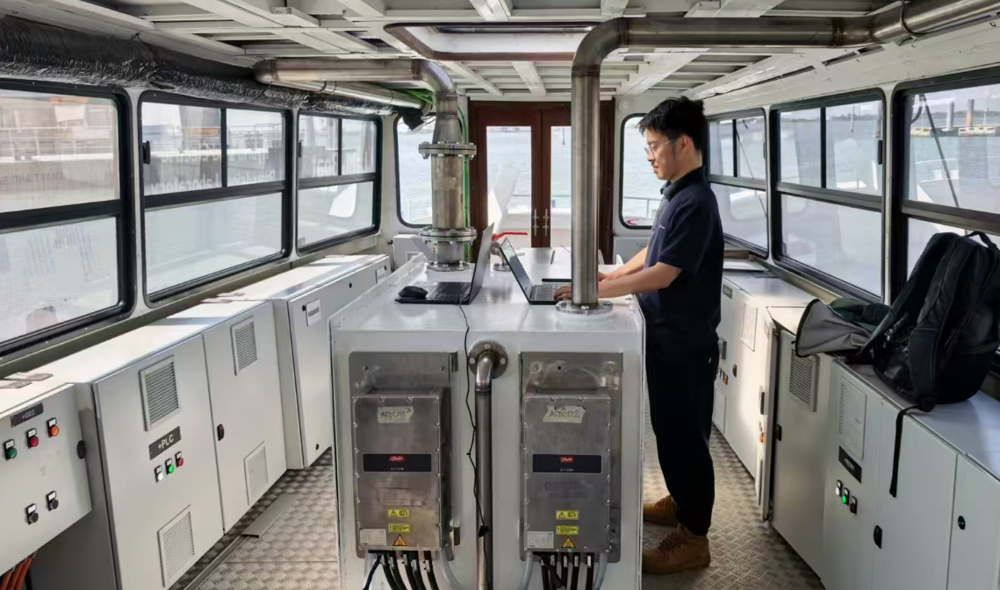

Project Progress
The LaboBoat project has successfully completed onboard commissioning at the ACTV shipyard in Venice, marking a significant milestone toward operational readiness.
Invested by Vulkan Italy, the vessel serves as a test platform for advanced electric and hybrid propulsion technologies and will operate in Venice.
Commissioning Scope

VFD Communication
Verification and debugging of communication between all frequency converters

Diesel Engine System
Validation of communication interfaces and data exchange functions

HMI Panel
Program debugging, updates, and optimization of the control interface

System Integration
Integrated system testing to ensure coordinated operation

System Verification
During onboard commissioning, key aspects such as communication reliability, control logic, and multi-system coordination were thoroughly validated.
- Communication Reliability: Stable and consistent data exchange across all systems
- Control Logic: Verified system behavior in accordance with design requirements
- System Coordination: Seamless interaction between subsystems
- Operational Stability: Reliable performance under real operating conditions

Project Milestones
Factory Acceptance Testing (FAT)
System functionality and performance verified
Onboard Commissioning
System testing and integration after installation
Sea Trials
Performance validation under real operating conditions
Looking Ahead
The successful completion of onboard commissioning further demonstrates GEES’s capabilities in system integration and marine electrification technologies.
As the project moves into the sea trial phase, the LaboBoat will provide valuable insights into real-world applications of next-generation electric propulsion systems.